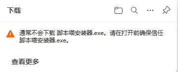
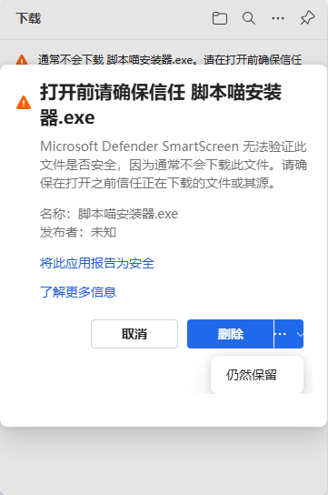

脚本喵是 Windows 桌面自动化工具，把鼠标点击、键盘输入、图像识别组合成脚本，重复性工作一键自动完成。以下三种方式任选其一，都是最新版（各版本号见下）。
Windows 10 / Windows 11（64 位）
无需 Python / Java 等任何运行环境，单文件即开即用
2GB 内存以上，任何主流 CPU 均可流畅运行
这是 Windows 对未签名程序的常规安全提醒（不是病毒警告）。脚本喵不含任何恶意代码，按下面 3 步放心安装即可。
点提示右侧的「…」，选择「仍然保留」，文件会正常保存到下载目录。

若出现「Microsoft Defender SmartScreen 无法验证此文件是否安全」的窗口，点「更多信息」→ 再点「仍然保留」（或「仍要运行」）。

之后按安装向导完成安装即可，不影响任何功能与使用。